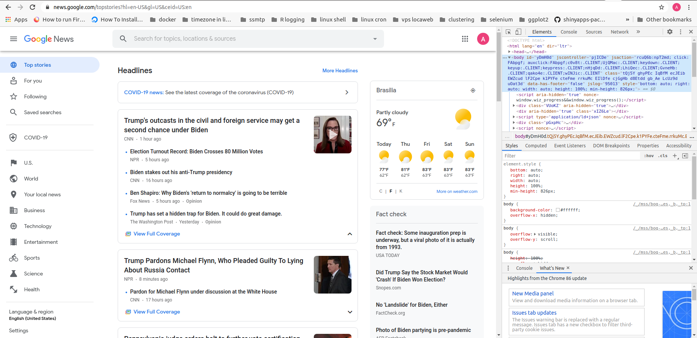
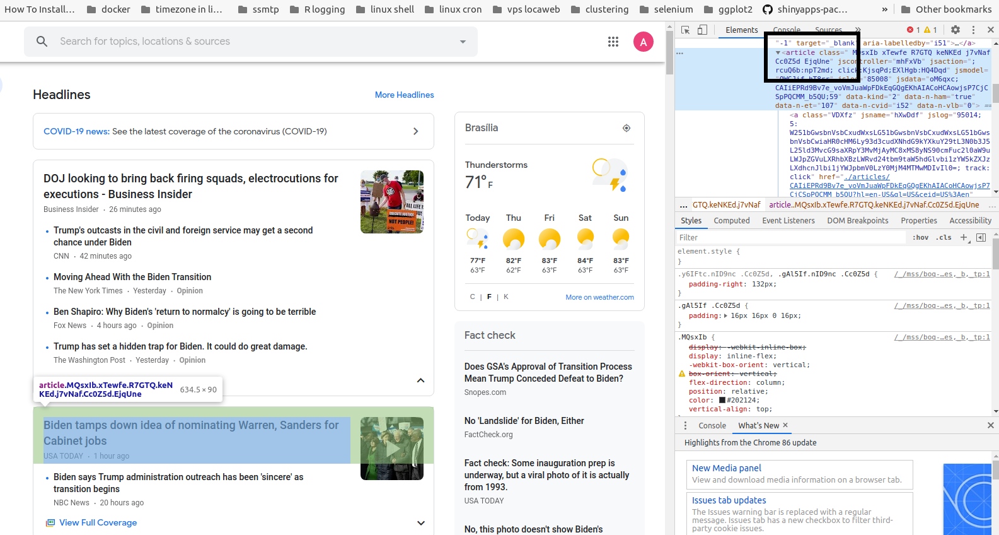

rvest (2020’s update)This is an example of how to scrape the Google News website with the rvest package.
This post is a solution for a question from a WhatsApp group, blackbeltR. A great deal of the basic ideas comes from his own code. I just kept it and added few things in order to get the code working.
First off, you should take a look at the Google News website HERE, which I reproduce below:

You may notice, on the right side of the page, that we are using Google Chrome dev-tools. This is necessary in order to identify the html nodes we need. You can access this tool by hitting the F12 key. The html nodes are passed as arguments to the rvest functions.
Basically, the idea is to extract the communication vehicle (vehicle), the time elapsed since the news was published (time), and the main headline (headline).
The code and comments are presented below:
# loading the packages:
library(dplyr) # for pipes and the data_frame function
library(rvest) # webscraping
library(stringr) # to deal with strings and to clean up our data# extracting the whole website
google <- read_html("https://news.google.com/")As we can see, he Google News website is divided in rectangular chunks of headlines and other info. Therefore, our strategy is to first scrape the whole chunks, and then, for each chunk scrape the information of interest: vehicle, time, and the headlines.
We start scraping the whole chunks of articles. By using the “inspect” tool of our browser, we can see that the "article" node is the one that identifies each chunk.

# extracting the headlines
# and using stringr for cleaning
article_all <- google %>% html_nodes("article")
article_all## {xml_nodeset (55)}
## [1] <article class=" MQsxIb xTewfe R7GTQ keNKEd j7vNaf Cc0Z5d EjqUne" jscont ...
## [2] <article class=" MQsxIb xTewfe tXImLc R7GTQ keNKEd keNKEd dIehj EjqUne" ...
## [3] <article class=" MQsxIb xTewfe tXImLc R7GTQ keNKEd keNKEd dIehj EjqUne" ...
## [4] <article class=" MQsxIb xTewfe tXImLc R7GTQ keNKEd keNKEd dIehj EjqUne" ...
## [5] <article class=" MQsxIb xTewfe tXImLc R7GTQ keNKEd keNKEd dIehj EjqUne" ...
## [6] <article class=" MQsxIb xTewfe R7GTQ keNKEd j7vNaf Cc0Z5d EjqUne" jscont ...
## [7] <article class=" MQsxIb xTewfe tXImLc R7GTQ keNKEd keNKEd dIehj EjqUne" ...
## [8] <article class=" MQsxIb xTewfe tXImLc R7GTQ keNKEd keNKEd dIehj EjqUne" ...
## [9] <article class=" MQsxIb xTewfe tXImLc R7GTQ keNKEd keNKEd dIehj EjqUne" ...
## [10] <article class=" MQsxIb xTewfe tXImLc R7GTQ keNKEd keNKEd dIehj EjqUne" ...
## [11] <article class=" MQsxIb xTewfe R7GTQ keNKEd j7vNaf Cc0Z5d EjqUne" jscont ...
## [12] <article class=" MQsxIb xTewfe tXImLc R7GTQ keNKEd keNKEd dIehj EjqUne" ...
## [13] <article class=" MQsxIb xTewfe tXImLc R7GTQ keNKEd keNKEd dIehj EjqUne" ...
## [14] <article class=" MQsxIb xTewfe tXImLc R7GTQ keNKEd keNKEd dIehj EjqUne" ...
## [15] <article class=" MQsxIb xTewfe tXImLc R7GTQ keNKEd keNKEd dIehj EjqUne" ...
## [16] <article class=" MQsxIb xTewfe R7GTQ keNKEd j7vNaf Cc0Z5d EjqUne" jscont ...
## [17] <article class=" MQsxIb xTewfe tXImLc R7GTQ keNKEd keNKEd dIehj EjqUne" ...
## [18] <article class=" MQsxIb xTewfe tXImLc R7GTQ keNKEd keNKEd dIehj EjqUne" ...
## [19] <article class=" MQsxIb xTewfe tXImLc R7GTQ keNKEd keNKEd dIehj EjqUne" ...
## [20] <article class=" MQsxIb xTewfe tXImLc R7GTQ keNKEd keNKEd dIehj EjqUne" ...
## ...Having the whole chunks, now we can separately scrape the information of interest:
times <- article_all %>%
html_node("time") %>%
html_text()
vehicles <- article_all %>%
html_nodes("a.wEwyrc.AVN2gc.uQIVzc.Sksgp") %>%
html_text()
headlines <- article_all %>%
html_nodes("a.DY5T1d") %>%
html_text()Let’s take a look on these vectors:
# take a look at the first ten
headlines[1:10]## [1] "Trump announces pardon for Michael Flynn in tweet"
## [2] "Trump grants Michael Flynn a full pardon"
## [3] "President Trump pardons former National Security Adviser Michael Flynn"
## [4] "Andrew McCarthy: Trump’s Flynn pardon justified — adviser should never have been investigated and prosecuted"
## [5] "Trump’s pardon of Michael Flynn is a parting disgrace"
## [6] "Trump rants about overturning the election even as administration begins transition to Biden"
## [7] "Trump's outcasts in the civil and foreign service may get a second chance under Biden"
## [8] "New New York travel restrictions take effect, NJ and CT stick with advisory"
## [9] "Ben Shapiro: Why Biden's 'return to normalcy' is going to be terrible"
## [10] "Biden soars as leader of the free world | TheHill"vehicles[1:10]## [1] "CNN" "Fox News" "CNN"
## [4] "Fox News" "The Washington Post" "CNBC"
## [7] "CNN" "Yahoo News" "Fox News"
## [10] "The Hill"times[1:10]## [1] "3 hours ago" "5 hours ago" "4 hours ago" "2 hours ago" "1 hour ago"
## [6] "4 hours ago" "3 hours ago" "9 hours ago" "11 hours ago" "11 hours ago"It seems all good!
Then, we can proceed to generate our final tibble:
tb_news <- tibble(headlines, vehicles, times)
tb_news## # A tibble: 55 x 3
## headlines vehicles times
## <chr> <chr> <chr>
## 1 Trump announces pardon for Michael Flynn in tweet CNN 3 hours …
## 2 Trump grants Michael Flynn a full pardon Fox News 5 hours …
## 3 President Trump pardons former National Security A… CNN 4 hours …
## 4 Andrew McCarthy: Trump’s Flynn pardon justified — … Fox News 2 hours …
## 5 Trump’s pardon of Michael Flynn is a parting disgr… The Washington… 1 hour a…
## 6 Trump rants about overturning the election even as… CNBC 4 hours …
## 7 Trump's outcasts in the civil and foreign service … CNN 3 hours …
## 8 New New York travel restrictions take effect, NJ a… Yahoo News 9 hours …
## 9 Ben Shapiro: Why Biden's 'return to normalcy' is g… Fox News 11 hours…
## 10 Biden soars as leader of the free world | TheHill The Hill 11 hours…
## # … with 45 more rowsThat’s all!